flowchart TD
A[Define task] --> B[Data]
B --> C[Train]
C --> D[Val and Test]
D --> C
D --> E[Deploy]
A 2-hour Masterclass · Theory, Code & Practical Demos
2026-05-04
A ‘masterclass-style’ computer vision workshop (image classification)
We acknowledge the Traditional Owners of the lands on which we work and learn, and pay our respects to their Elders past, present and emerging.
9 to ~11 am.
Tip
Ask as we go.
Note
Most of the theory will be paired with Python examples so you can see how the idea lands in practice.
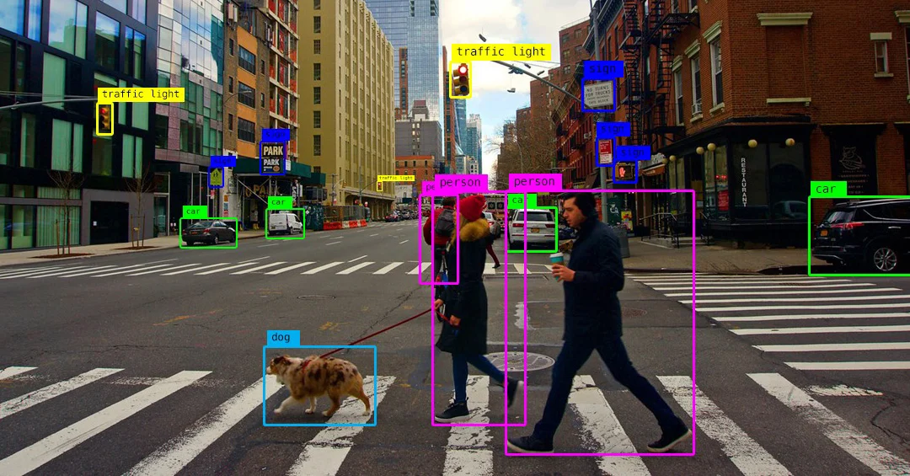
1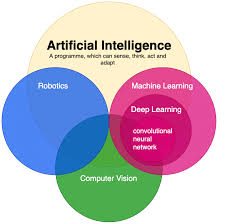
1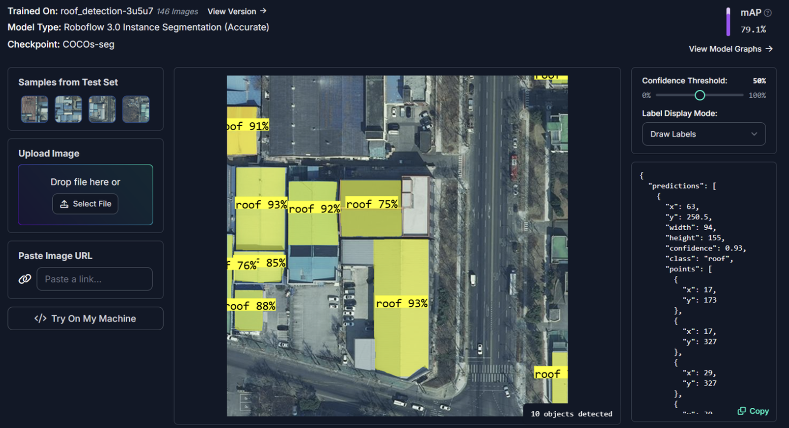
1
Roboflow is a platform for computer vision projects. It provides tools for:
There are many apps and tools that are making computer vision more accessible. From experience, Roboflow is the most comprehensive and user-friendly for end-to-end projects.
Warning
Some of the advanced features (e.g. hosted inference) are paid, but the free tier is generous enough for most research projects.
Warning
UQ or the Data Science CRP do not have any financial relationship with Roboflow. I just genuinely like their product and use it in my projects. Many people at UQ use it and have had good experiences.
flowchart TD
A[Define task] --> B[Data]
B --> C[Train]
C --> D[Val and Test]
D --> C
D --> E[Deploy]
Data High quality, labelled data is most important ‘asset’ in computer vision.
Compute AI is becoming more accessible, adding more pressure into processing infrastructure.
Models There are many pre-trained or foundation models you can already download.
You almost never need to train a model from scratch. Assume there is a pre-trained model that already does 70% of your job.
There are three core CV tasks that cover most use cases. They differ in the specificity of their output.
| Task | Output | Answers | Typical use |
|---|---|---|---|
| Classification | One (or many) labels per image | What is in this image? | Species ID, quality control |
| Object detection | Labels + bounding boxes | What and where? | Counting, tracking, surveillance |
| Segmentation | Per-pixel labels (mask) | What, where, exact shape? | Medical imaging, area/biomass |
Warning
Cost scales with task type. Segmentation tasks are more expensive than classification tasks.
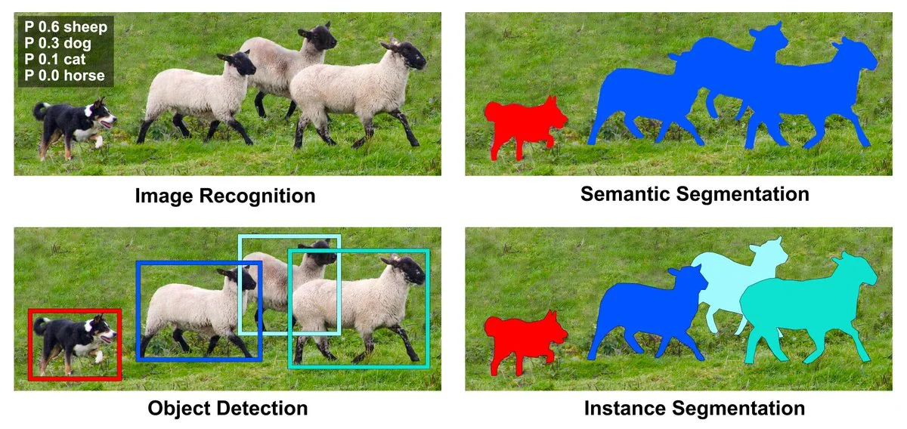
1
This is how the model ‘sees’ the data and what it learns to output for each task. The conf scores are the model’s confidence in its prediction. More information on this in the validation and testing section.
Classification
{label: 'cat', conf: 0.94}
Detection
[{label:'cat', bbox:[x1,y1,x2,y2], conf:0.91}]
Segmentation
mask: ndarray[H,W] of class ids
Roboflow has several python libraries to make it easy to pull pre-trained models and run inference on your images. In here we show how to use inference.
from inference import get_model
# --- Classification — cell type from microscopy image ---
cls = get_model("cell-type-classifier/1").infer("slide.jpg")[0]
# --- Detection — locate nuclei with bounding boxes ---
dets = get_model("nuclei-detection/2").infer("slide.jpg")[0]
# --- Segmentation — pixel-level cell masks via SAM 2 ---
masks = get_model("sam2/hiera_small").infer("slide.jpg")[0]Note
get_model("owner/version") pulls any model from Roboflow Universe (more info on this later)
Start from the decision you want to make; work out the minimum output that enables it.
| Domain | Question | Task |
|---|---|---|
| Traffic | Is this vehicle a car, bus, or truck? | Classification |
| Microscopy (health) | How many nuclei are in this slide? | Detection |
| Agriculture | What fraction of the canopy is affected by disease? | Segmentation |
flowchart TD
A["Define task ✅"] --> B[Data]
B --> C[Train]
C --> D[Val and Test]
D --> C
D --> E[Deploy]
Data is the foundation of computer vision. A better dataset beats a better model every time.
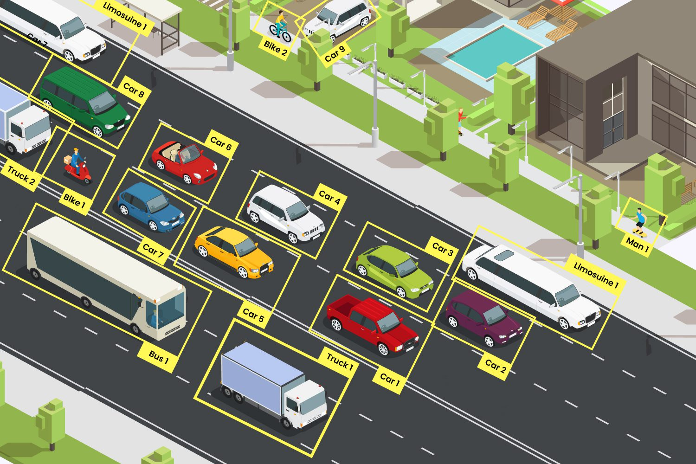
1
In the early days of computer vision, labelling was a purely manual process. Now we can leverage semi-automated labelling techniques to speed up the annotation process.
For example we can ask ‘foundational models’ like ‘CLIP’ or ‘SAM’ to find and label your object of interest in an image.
Important
In some situations manual labelling is still necessary - for those highly domain-specific tasks where pre-trained models struggle.
| Manual labelling | Semi-automated labelling |
|---|---|
| Detecting coral bleaching in a location where AI has never been trained before | Detect coral reefs and classify it into species / genus |
| Classifying plant diseases from leaf images | Segment parts of a plant (leaf, trunk, fruit etc) |
Semi-automated labelling in action
1
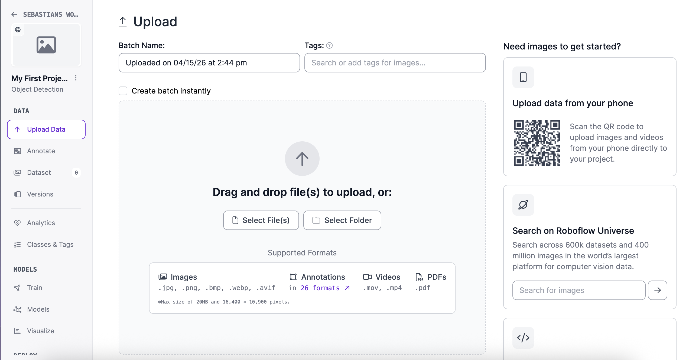
{width=“70%”}1
Roboflow Universe is a public repository of datasets and models. You can search for a dataset/model that matches your problem, and either use it directly or fine-tune it on your data.
flowchart TD
A["Define task ✅"] --> B["Data✅"]
B --> C[Train]
C --> D[Val and Test]
D --> C
D --> E[Deploy]
Once you have labelled data you need to split the data into three sets: Train, Validation, and Test. Each set has a specific purpose in the model development lifecycle.
flowchart LR
D[Labelled data] --> T[Train ~70%]
D --> V[Val ~15%]
D --> S[Test ~15%]
T -->|fit weights| M[Model]
V -->|tune hyperparams| M
S -->|final metric| R[Final result]
Important
The test set is sacred. Use it when you are ready to test / report your final results.
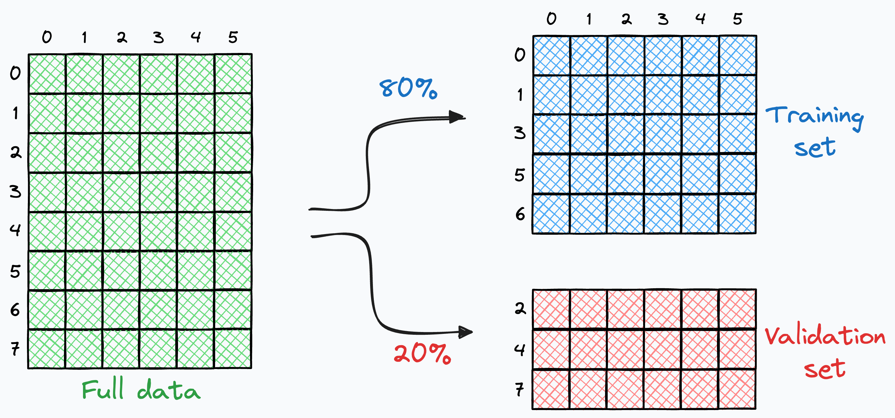
Stratified vs random split
Models only learn from the data you show them. If your training set is too narrow, your model will fail when it sees something new in the real world.
Warning
This is one of the most common sources of “it worked in the lab but fails in the field” problems.
There are many frameworks and libraries to train models, but here is classic object detection example
from roboflow import Roboflow
from ultralytics import YOLO
import supervision as sv
# 1. pull dataset
dataset = Roboflow(api_key="YOUR_KEY") \
.workspace("my-workspace") \
.project("my-detection-project") \
.version(1).download("yolov8")
# 2. train
model = YOLO("yolov8n.pt")
model.train(data=f"{dataset.location}/data.yaml", epochs=30, imgsz=640)In Roboflow, its all point and click tools. Plenty of options, tutorials and code (if you want to do it yourself).
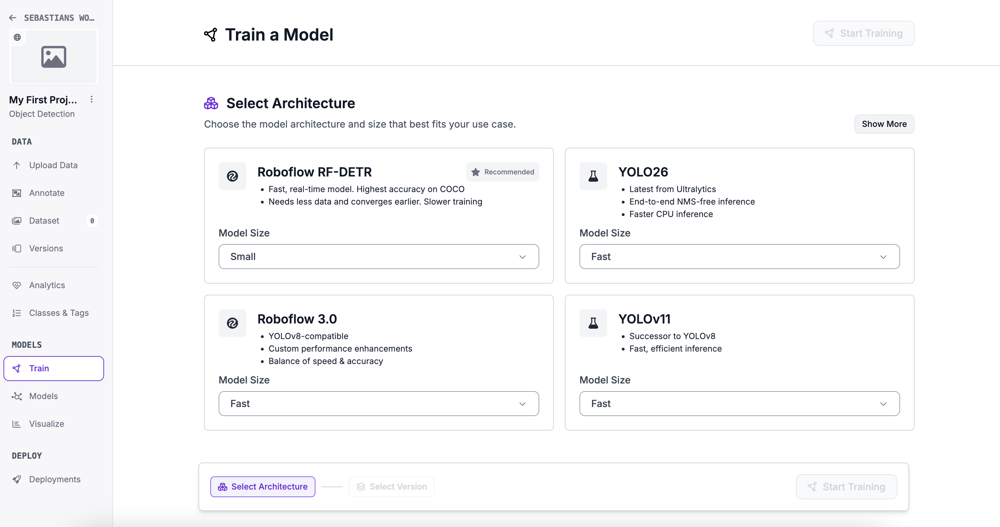
1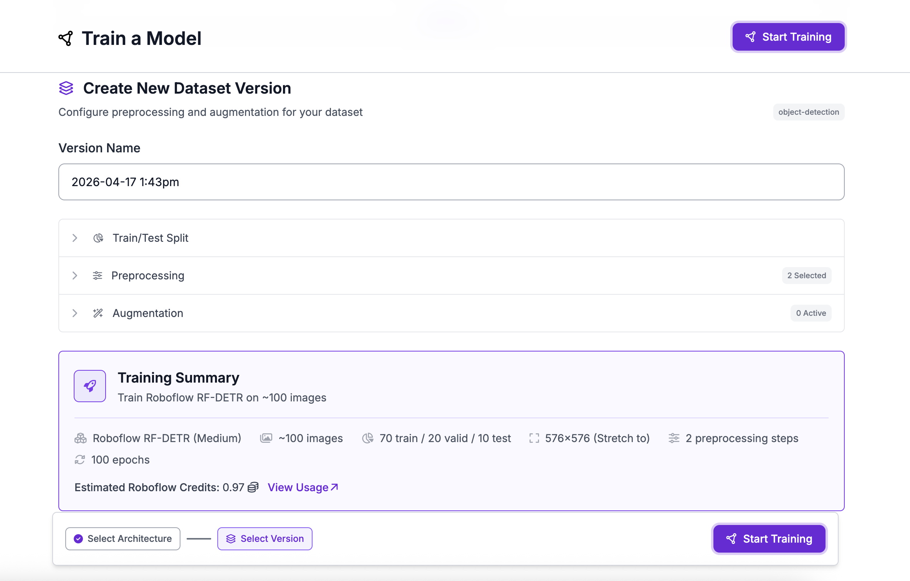
1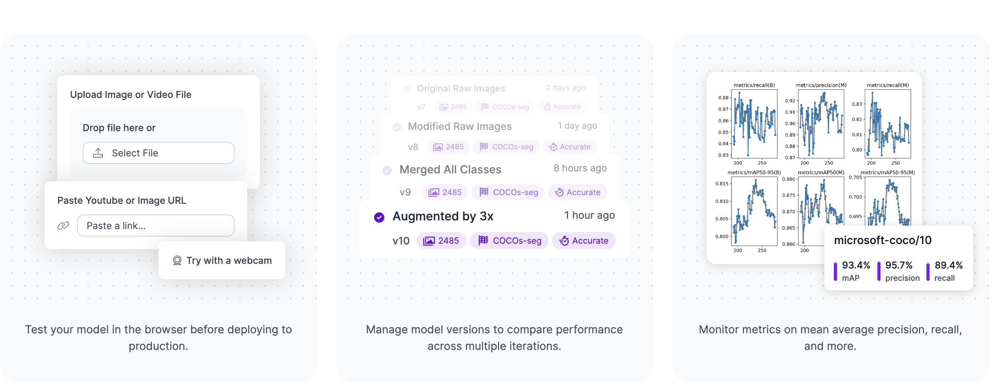
1| # | Model | Type | Strengths | Best For |
|---|---|---|---|---|
| 🥇 | YOLO26 | Detection / Multi-task | Fastest edge inference, NMS-free, multi-task | IoT, robotics, real-time apps |
| 🥈 | YOLOv12 | Detection | Best accuracy, attention-centric | Research & benchmarking |
| 🥉 | RF-DETR | Detection / Segmentation | Best cross-domain generalisation | Medical, infrastructure |
| 4 | OpenCV | Classical CV | No ML needed, rock-solid preprocessing | Pipelines, rule-based vision |
| 5 | SAM 2 | Segmentation | Zero-shot, no labels needed | Healthcare, geospatial |
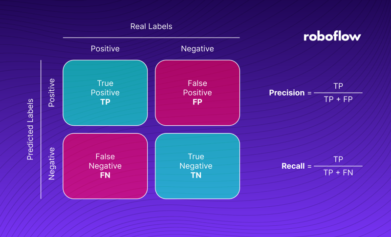
1Accuracy can be misleading, especially with imbalanced datasets.
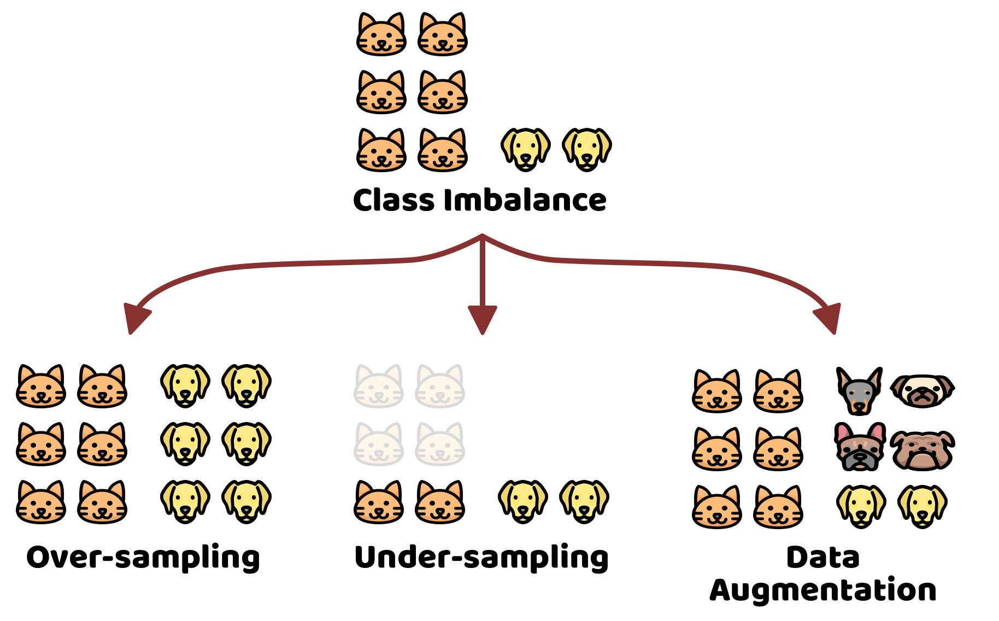
1Most models output a confidence score for each prediction/inference. It’s important to choose an appropriate threshold for these scores to balance precision and recall according to your specific use case.
Classification
{label: 'cat', conf: 0.94}
Detection
[{label:'cat', bbox:[x1,y1,x2,y2], conf:0.91}]
Segmentation
mask: ndarray[H,W] of class ids
🔽 Low threshold (e.g. 0.2)
Accepts many predictions, even uncertain ones.
Use when missing a case is costly (e.g. disease screening)
⚖️ Balanced threshold (e.g. 0.5)
Accepts predictions the model is fairly sure about.
Tune from here based on your use case
🔼 High threshold (e.g. 0.9)
Only accepts very confident predictions.
Use when a false alarm is costly (e.g. automated actions)
Let’s take a 10 minute break!
flowchart TD
A["Define task ✅"] --> B["Data✅"]
B --> C[Train✅]
C --> D[Val✅ and Test✅]
D --> C
D --> E[Deploy]
Domain shift = when the distribution of data at deployment differs from the distribution at training.
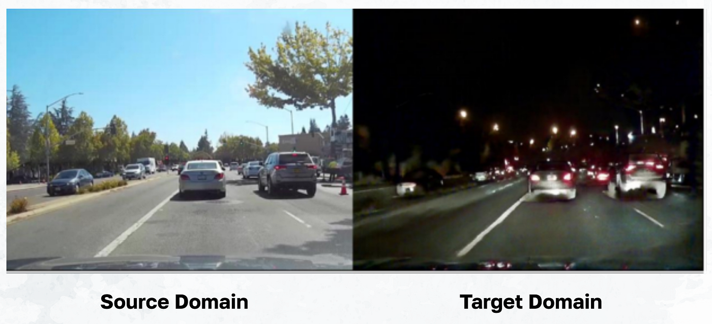
1Models learn patterns in the training data. If the deployment data looks different, those patterns may not hold, leading to poor performance.
To solve this, you need to monitor when domain shift occurs and adapt your model or data collection strategy accordingly.
Can help your model adapt to the new data distribution without needing to train from scratch.
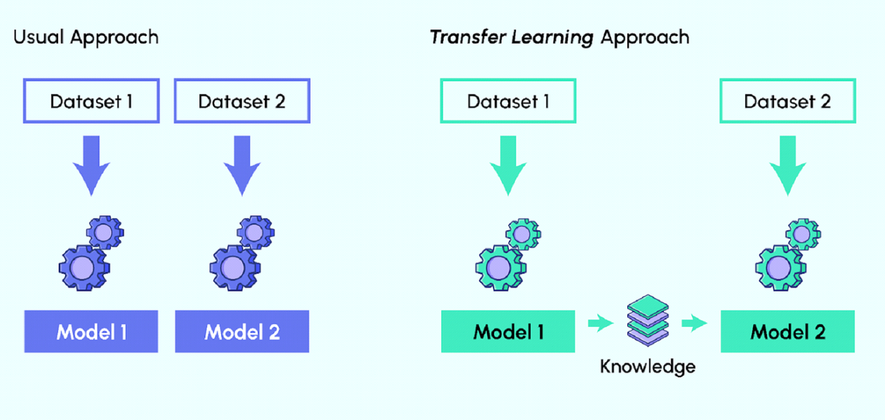
1Large pre-trained models that can be used for a wide range of tasks with little to no fine-tuning
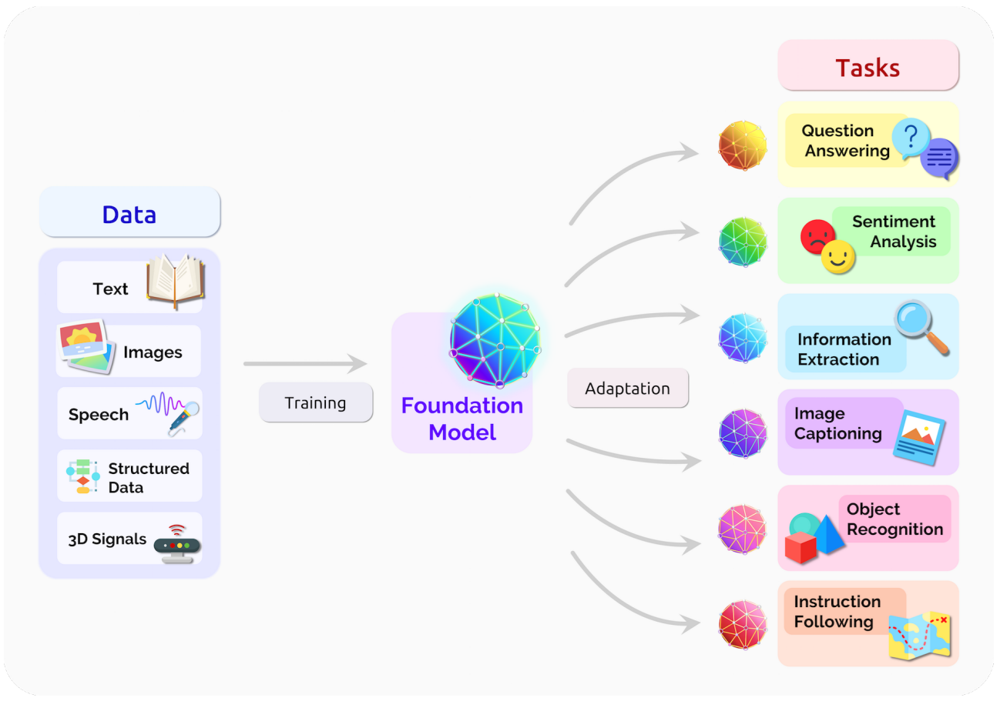
1
Deployment is not just about putting a model in production. It encompasses the entire lifecycle of maintaining and improving a model after it’s been deployed.
Lets display this in Roboflow
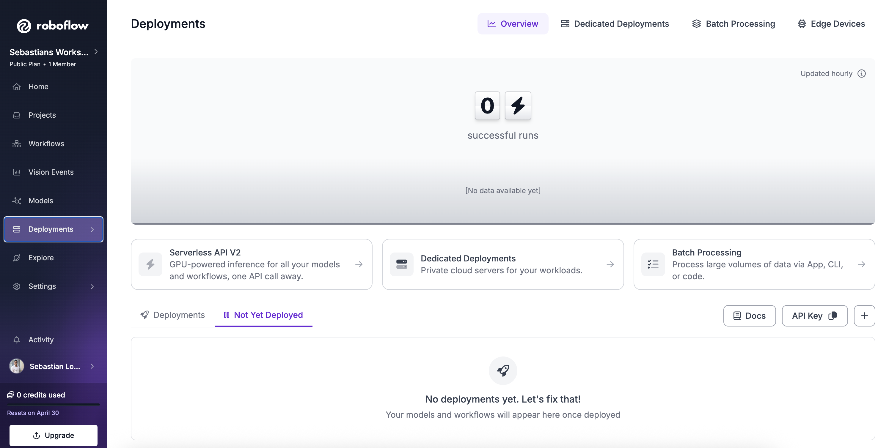
1
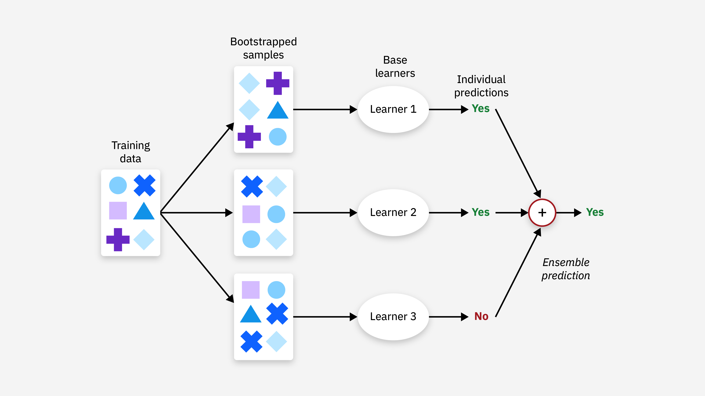
1
| Task | Most of the time → use a tool | Rarely → do it yourself | Need an expert when… |
|---|---|---|---|
| Collect data | Roboflow Universe — find existing datasets | Photograph & organise your own images | Data is rare, sensitive or needs special fieldwork |
| Label data | Auto-label with AI (SAM, CLIP) in Roboflow | Label a small sample to verify quality | Highly specialised domain (e.g. medical, rare species) |
| Train a model | Click-to-train in Roboflow or Colab notebook | Fine-tune with custom scripts | Novel architecture or very scarce data |
| Evaluate results | Auto metrics dashboard in Roboflow | Read exported CSV and plot manually | Bias audits or statistical rigour required |
| Build an app | Roboflow Inference SDK + hosted API | Code a lightweight local script | Scalable multi-model pipeline or strict security |
| Deploy to cloud | One-click hosted endpoint in Roboflow | Set up your own server | High traffic or enterprise reliability needs |
| Deploy to device | Export ready-to-run model file | Flash and configure device manually | Custom hardware or real-time performance constraints |
s.lopezmarcano@uq.edu.au
Easy Image Classification Masterclass · UQ Data Science CRP